numerical_routines module¶
This module contains functions that take care of solving the differential equations. Not only do they actually solve the dynamics equations in either the frequency or the time domain. They are also used to set up all required parameters and to perform the post processing.
-
numerical_routines.central_differences(nodes, node_id, glob_stiff, hyst_damp, inf_damp, lumped_mass, ext_force, data, file_name)¶ Integrate the computed acceleration through time using the central difference scheme
The central difference scheme is based on the following approximations
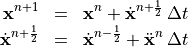
where
 is the (constant) time increment,
is the (constant) time increment,  is the time increment number and a dot on top of
a variable denotes one differentiation in time (e.g. 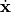 denoted the velocity vector).
is the time increment number and a dot on top of
a variable denotes one differentiation in time (e.g. 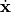 denoted the velocity vector).The acceleration is computed as

where and 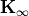 are the global stiffness matrix and the stiffness matrix due to infinity boundary conditions. The remaining matrices 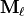, 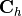, and 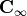 are the lumped mass matrix, the hysteretic damping matrix and the viscous damping matrix due to infinity boundary conditions. Finally denotes the external force vector. As external force white noise is chosen, which is obtained by superimposing single sines.
In order to obtain the hysteretic damping forces, should be multiplied with 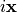, but this is not directly possible during the the integration in the time domain. Therefore is approximated with a vector in the same direction as the velocity (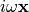), but with the magnitude equal to [6].
- Parameters
nodes – (float) array [NP, 2] with the radial and vertical coordinate of each node (NP: total number of nodes)
node_id – (int) array [NP, 2] with the equation number of the radial and vertical displacement of each node
glob_stiff – (float) csr_matrix [NEQ, NEQ] global stiffness matrix (NEQ: total number of equations)
hyst_damp – (float) csr_matrix [NEQ, NEQ] global hysteretic stiffness matrix
inf_damp – (float) csr_matrix [NEQ, NEQ] viscous damping matrix due to infinite boundaries
lumped_mass – (float) array [NEQ] with diagonal components of the lumped mass matrix
ext_force – (float) array [NEQ] with global external unit force vector
data – (dict) with FEM input parameters
file_name – (string) full path to the txt-file describing the determined FEM parameters
- Returns
(dict) with the transfer compliance in radial and vertical direction
-
numerical_routines.frequency_sampling(data)¶ Determine frequencies at which harmonic response analysis is performed
- Parameters
data – (dict) with FEM input parameters
- Returns
(float) array [NFREQ] with frequencies (NFREQ: total number of frequencies)
-
numerical_routines.harmonic_response(nodes, node_id, glob_stiff, hyst_damp, inf_damp, consistent_mass, ext_force, data, file_name)¶ Solve the harmonic response equation for pre-selected frequencies

where 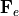 and 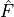 are the external unit force vector and the force amplitude, 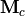, , , and are the consistent mass matrix, the viscous damping matrix due to infinite boundary conditions, the hysteretic damping matrix, the stiffness matrix and the stiffness matrix due to infinite boundary conditions, respectively. Finally
 an
an  are the circular frequency for which the harmonic
response is computed, and the complex unity.
are the circular frequency for which the harmonic
response is computed, and the complex unity.The interface to the pardiso solver does not support complex arithmetic (yet). Therefore, when this solver is chosen (
data["SolverType"]=3) the symmetric complex matrix to be solved 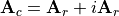 is transformed into a anti-symmetric real one 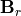, while doubling the total number of unknowns, which now include the real parts of the unknowns followed by the imaginary parts.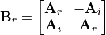
- Parameters
nodes – (float) array [NP, 2] with the radial and vertical coordinate of each node (NP: total number of nodes)
node_id – (int) array [NP, 2] with the equation number of the radial and vertical displacement of each node
glob_stiff – (float) csr_matrix [NEQ, NEQ] global stiffness matrix (NEQ: total number of equations)
hyst_damp – (float) csr_matrix [NEQ, NEQ] global hysteretic stiffness matrix
inf_damp – (float) csr_matrix [NEQ, NEQ] viscous damping matrix due to infinite boundaries
consistent_mass – (float) csr_matrix [NEQ, NEQ] with the global consistent mass matrix
ext_force – (float) array [NEQ] with global external unit force vector
data – (dict) with FEM input parameters
file_name – (string) full path to the txt-file describing the determined FEM parameters
- Returns
(dict) with the transfer compliance in radial and vertical direction
-
numerical_routines.max_time_step(glob_stiff, lumped_mass, factor, tolerance, max_iterations)¶ Routine to determine the maximum time step at which central differences is stable
In linear analysis the central difference method is unconditionally stable when the chosen time step (for integrating through time)
 , where
, where  is the maximum
circular frequency of the system.
is the maximum
circular frequency of the system.The procedure to determine the maximum circular frequency is based on the power method, which is an iterative method
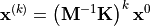
where 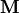 and are the global mass and stiffness matrix, and 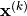 is the eigenvector obtained at the
 iteration. As initial vector
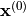 a random vector is chosen. The eigenvalue at the iteration is computed as
iteration. As initial vector
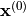 a random vector is chosen. The eigenvalue at the iteration is computed as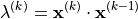
Relative convergence is checked on the eigenvalue.
- Parameters
glob_stiff – (float) csr_matrix [NEQ, NEQ] global stiffness matrix (NEQ: total number of equations)
lumped_mass – (float) array [NEQ] with diagonal components of the lumped mass matrix
factor – (float) safety for determining time step
tolerance – (float) iteration tolerance to determine the highest eigenfrequency
max_iterations – (int) maximum number of iterations to determine the highest eigenfrequency
- Returns
(float) time step [s]
-
numerical_routines.pick_method(data, glob_stiff, lumped_mass, consistent_mass, hyst_damp, inf_damp, ext_force, file_name)¶ Routine to estimate the required CPU time to perform the simulation using central difference and harmonic response analysis. The fastest method is then chosen
- Parameters
data – (dict) with FEM input parameters
glob_stiff – (float) csr_matrix [NEQ, NEQ] global stiffness matrix (NEQ: total number of equations)
lumped_mass – (float) array [NEQ] with diagonal components of the lumped mass matrix
consistent_mass – (float) csr_matrix [NEQ, NEQ] with the global consistent mass matrix
hyst_damp – (float) scr_matrix [NEQ, NEQ] with the global hysteretic damping matrix
inf_damp – (float) scr_matrix [NEQ, NEQ] with the viscous damping matrix due to infinite boundaries
ext_force – (float) array [NEQ] with global external unit force vector
file_name – (string) full path to the txt-file describing the determined FEM parameters
- Returns
(dict) with the update data dictionary
-
numerical_routines.tfestimate(x, y, *args, **kwargs)¶ Routine to compute the transfer function between input x and output y
- Parameters
x – (float) array [NS] with the input trace (NS: total number of samples)
y – (float) array [NS] with the output trace
args – optional arguments (valid for scipy.signal.csd and scipy.signal.welch)
kwargs – optional arguments (valid for scipy.signal.csd and scipy.signal.welch)
- Returns
(complex, float) arrays [NF] with transfer spectrum and frequencies (NF number of frequencies)
-
numerical_routines.time_sampling(data, glob_stiff, lumped_mass)¶ Determine time stepping parameters
- Parameters
data – (dict) with FEM input parameters
glob_stiff – (float) csr_matrix [NEQ, NEQ] global stiffness matrix (NEQ: total number of equations)
lumped_mass – (float) array [NEQ] with diagonal components of the lumped mass matrix
- Returns
(float, int, int, float) with time step [s], total number of steps, interval at which output is generated,
end time [s]